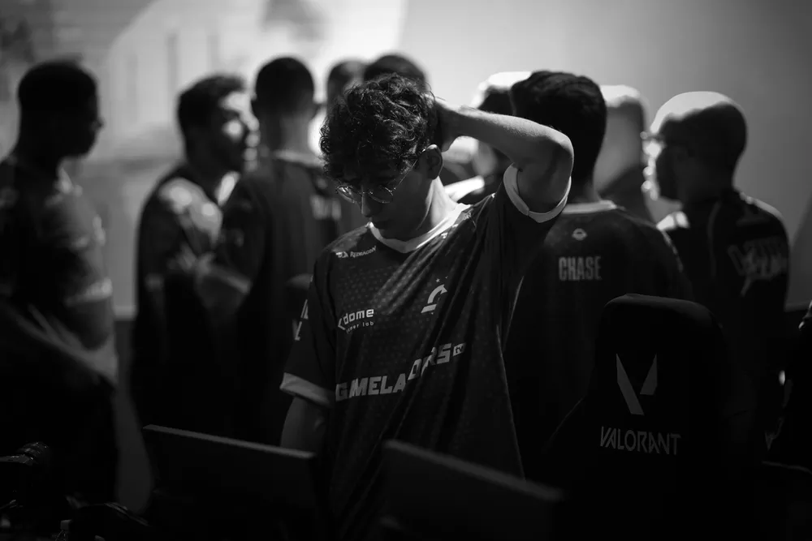

A Gamelanders anunciou uma reformulação completa de seu elenco Blue (masculino) de Valorant. Em comunicado disparado nas redes sociais, a organização comentou a frustração de não disputar nenhuma das competições internacionais do VCT em 2022, e disponibilizou todos os seus jogadores para negociação — os atletas, entretanto, seguem sob contrato com a equipe.

— Temos o maior respeito por todos os profissionais que se dedicaram arduamente dentro da Gamelanders Blue no ano de 2022 e garantimos que não faltou esforço, empenho e dedicação no dia a dia. No entanto, muitas vezes as coisas não saem como planejado e precisamos nos adaptar aos cenários — lê o comunicado, que cita chegar aos mundiais como único objetivo de ambos elencos da GL.
A Gamelanders Blue chegou a se classificar para os playoffs da primeira etapa do VCT BR 2022, mas caiu sem vencer nenhum jogo na segunda etapa e se despediu prematuramente da competição, sem chances de se qualificar ao Last Chance Qualifier para o Valorant Champions. O elenco que fica aberto para negociações é composto por:
O elenco Purple (feminino) da Gamelanders segue na briga pela classificação ao mundial, que terá apenas uma vaga destinada ao Brasil.